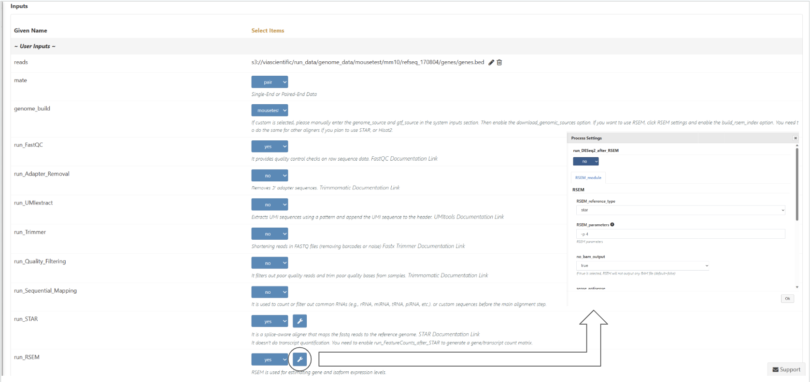
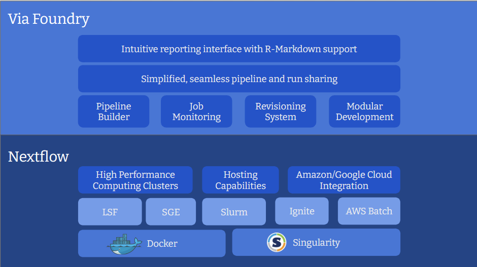

Short Overview
What is Via Foundry?
Via Foundry is the web interface of an intuitive and powerful bioinformatics platform designed to simplify pipeline design, development and maintenance, enabling analysis and management of mass quantities of samples on High Performance Computing (HPC) environments, cloud services (AWS, Google Cloud etc.), or personal workstations. It automatically builds Nextflow pipelines by assembling components such as processes and modules, enabling seamless implementation of complex bioinformatics workflows. Moreover, we offer assistance for NF-core or customized Nextflow pipelines, allowing easy integration of these pipelines directly from Github or Bitbucket repositories.
Benefits of Via Foundry's Design
- Build: Via Foundry's drag-and-drop interface allows for effortless creation of new pipelines, without the need to write commands from scratch. Existing processes/modules can be reused to create new pipelines, which can then be exported as Nextflow files or readily run within Via Foundry.
- Run: Pipelines can be executed in any host environment with different executors, such as SGE, LSF, SLURM, Ignite, and more. Via Foundry also seamlessly integrates with Amazon/Google Cloud, allowing for easy creation of a cluster in the cloud, execution of the pipeline, and transfer of results to a cloud storage service (Amazon Storage, S3 or Google Storage, GS).
- Resume: Via Foundry's continuous checkpoint mechanism keeps track of each step of the running pipeline, enabling partially completed pipelines to be resumed at any stage, even after parameter changes.
-
Analyze: Via Foundry's report section provides a concise summary of each executed step, facilitating efficient data analysis. It also allows for seamless exploration of reported files through interactive applications like Shiny App, R-Studio (R-Markdown), Jupyter Notebook, or any other containerized app.
-
Improve: Via Foundry's revisioning system keeps track of pipeline and process versions, as well as their parameters. This allows for easy editing, improvement, and customization of shared pipelines according to your needs.
- Share: Via Foundry allows for easy sharing of pipelines across different platforms, with the ability to isolate pipeline-specific dependencies in a container and easily replicate methods in other environments (clusters, clouds etc.).
What is Nextflow?
Nextflow is an incredibly potent and versatile framework. Based on the dataflow programming model, it is used for building parallelized, scalable and reproducible workflows using software containers, which provides an abstraction layer between the execution and the logic of the pipeline, which means that the same pipeline code can be executed on multiple platforms.
Who is Via Foundry for?
Via Foundry is designed for a wide variety of users, from bench biologists to expert bioinformaticians.
Executing pipelines in Via Foundry requires no programming knowledge. We aim to provide comprehensive explanations to guide users before they execute their pipelines. After a run completes, we provide an overall execution summary of each step, gathering all of the samples in simple tables or interactive apps/plots for ultimate comparison.
Building pipelines in Via Foundry requires basic scripting knowledge and familiarization with Nextflow to effectively use its operators. You don't need to learn all of the Nextflow syntax; instead, you can easily focus on the processes where basic input and output nodes are defined. The rest, such as creating and linking the channels, is handled by Via Foundry.
Why not just write a Nextflow pipeline?
In many cases, building a static Nextflow pipeline is sufficient for achieving our goals. However, it can be difficult to maintain process and module revisions using simple text editors. With the help of Via Foundry's user interface, you can easily track the evolution of each process and module by accessing their previous revisions. When upgrading existing pipelines, it's much easier to update each process because all of the process-related scripts are isolated in a process circle, and you don't need to deal with other parameters or channel operations that are defined in other parts of the Nextflow script. This modular structure gives us more flexibility and dynamism to create very complex pipelines with little effort.
Furthermore, Via Foundry has a built-in form creator that dynamically updates the run page according to the parameters defined in the process. This tool becomes especially powerful when creating complex pipelines with hundreds of optional parameters. As seen in the example below, you can easily isolate process-related parameters in their specific windows.

Please feel free to reference this image, which outlines the features of Via Foundry and Nextflow, to better understand the ethos of Via Foundry.

Public Pipelines
Attached is a brief list of Via Foundry's current public pipelines, along with some important sub-modules, all of which are ready to execute in your environment.
-
RNA-Seq Pipelines (RSEM, HISAT, STAR, Salmon, Kallisto, FeatureCounts)
-
ATAC-Seq Pipeline (MACS2)
-
ChIP Seq Pipeline (MACS2)
-
Single Cell Pipelines (10X Genomics, Indrop)
-
piRNA Pipelines (piPipes ChIP-Seq, Degradome/RAGE/CAGE, smallRNA)
-
Sub-Modules:
- Trimmer
- Adapter Removal
- Quality Filtering
- Common RNA Filtering
- ESAT
- FastQC,
- MultiQC
- RSeQC
- Picard
- IGV and UCSC genome browser file conversion